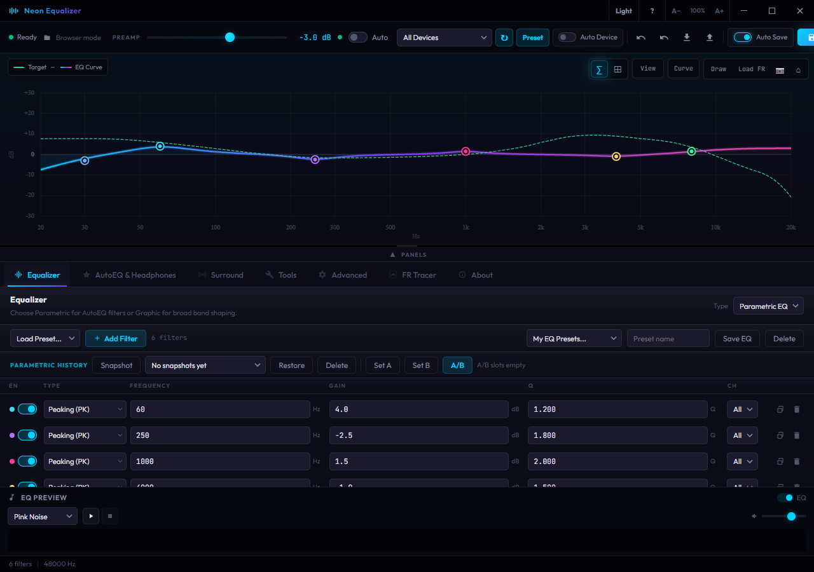

EQ That Stays Legible
Parametric and Graphic EQ controls sit beside a live response graph, A/B snapshots, preview audio, and reset points where you need them.
Equalizer APO control center
Parametric EQ, AutoEQ, Squiglink targets, hardware PEQ, surround tools, and APO power features in one focused Windows app.

Built for tuning work
Parametric and Graphic EQ controls sit beside a live response graph, A/B snapshots, preview audio, and reset points where you need them.
Choose the correction region, intensity, filter budget, normalization, and sub-bass roll-off so open-back headphones do not get reckless bass boosts.
Push and pull supported peak, low-shelf, and high-shelf bands from compatible devices through USB HID, serial, Bluetooth LE, or network paths.
Surround routing, HRTF previews, convolution, VST plugins, loudness correction, channel routing, delay, and raw APO editing live in the same workspace. HRTF users can start with HeSuVi or build custom BRIRs with ASH-Toolset.
Workflow
Bring in a measurement, load a target, generate filters, then trim the last few dB by ear. Neon Equalizer keeps the signal path visible from graph to APO output.
Windows desktop
Portable and installer builds are published with release notes so you can see exactly what changed before updating.